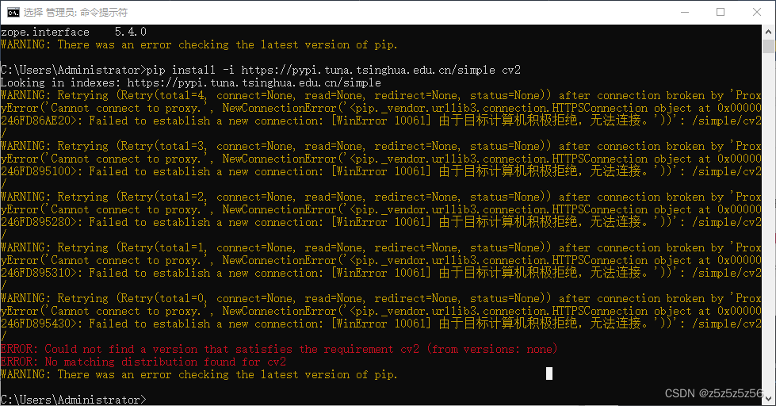
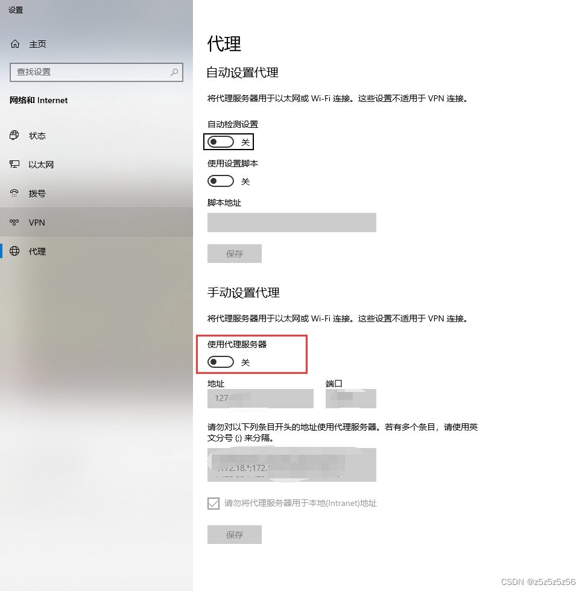
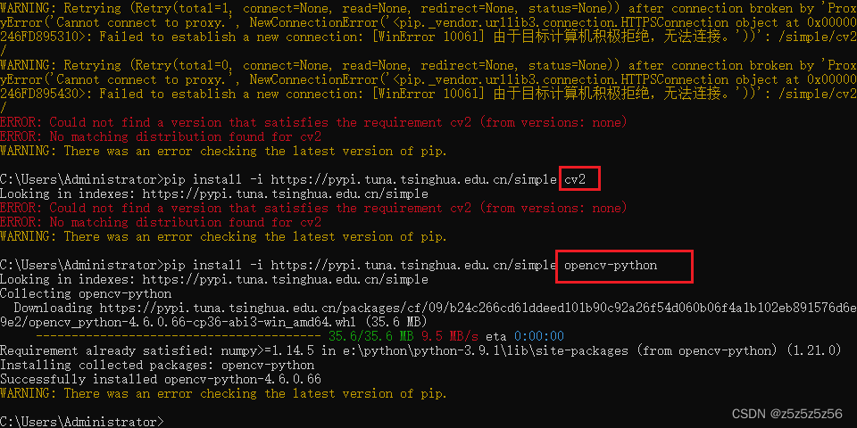

問題の説明
コマンドプロンプト（cmd）で pip を使って Python 環境にライブラリをインストールしようとしたところ、以下のエラーが発生しました：
Failed to establish a new connection: [WinError 10061] 由于目标计算机积极拒绝，无法连接。'))'

pip インストール時に WinError 10061「接続が拒否されました」のエラーが発生
解決策
ネットワークの問題です。的原因是之前使用的软件默认打开了电脑的代理设置（プロキシ設定）。
タスクバーで「プロキシ」を検索し、設定を開いてプロキシをオフにすれば解決します。

Windows設定でプロキシをオフにする
プロキシをオフにすると、正常にダウンロードできるようになります：

プロキシを解除すると pip が正常にパッケージをダウンロードできるようになる